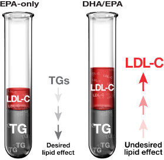

EPA and DHA have different effects on lipid levels1,2
EPA and DHA have been shown to lower TG levels...1-6.*
BUT
DHA has been shown to increase LDL-C in some patients.1,2,5-7
- The effect of DHA increasing LDL-C on cardiovascular morbidity and mortality has not been established.
- Any increase in LDL-C is counterproductive to the goals of statin therapy7,8
DHA, docosahexaenoic acid; EPA, eicosapentaenoic acid; LDL-C, low-density lipoprotein cholesterol; TG, triglyceride.

Failed outcomes studies of fenofibrates and niacin in statin-treated patients
Recent cardiovascular outcomes trials (ACCORD Lipid, AIM-HIGH, and HPS2-THRIVE),
- while not designed to test the effect of lowering TG levels in patients with high TG levels after statin therapy,
- each failed to demonstrate incremental cardiovascular benefit of adding a second lipid-altering drug (fenofibrate or formulations of niacin),
- despite raising HDL-C and reducing TG levels, among statin-treated patients with well controlled LDL-C.
VASCEPA is not FDA-approved for the treatment of statin-treated patients with mixed dyslipidemia and high (≥200 mg/dL and <500 md/dL) TG levels
- due to current uncertainty regarding the benefit, if any, of drug induced changes in lipid/lipoprotein parameters beyond statin-lowered LDL-C on cardiovascular risk among statin-treated patients with residually high TG.
- No prospective study has been conducted to test and support what, if any, benefit exists.
The effect of VASCEPA on the risk of cardiovascular mortality and morbidity has not been determined.
A cardiovascular outcomes study of VASCEPA designed to evaluate the efficacy of VASCEPA in reducing cardiovascular mortality and morbidity in a high risk patient population on statin therapy is currently underway (REDUCE-IT).
No studies have been conducted to directly compare the effects of VASCEPA and fenofibrates or VASCEPA and formulations of niacin.